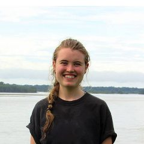

Main Content
Stanford Today
The latest news from Stanford


Get daily news updates from Stanford Report
Stanford Events
What’s happening on campus
Academics
Preparing students to make meaningful contributions to society as engaged citizens and leaders in a complex world

Undergraduate Education
Rich learning experiences that provide a broad liberal arts foundation and deep subject-area expertise

Graduate Education
Unsurpassed opportunities to participate in the advancement of entire fields of knowledge

Lifelong learning
Continuing adult education, executive and professional programs, and programs for K-12 students
Seven schools in which to pursue your passions

“Stories – narratives – are very powerful. I love literature for what it can teach us, what it makes us feel and how we use it to communicate with each other.”
Paula Moya
Danily C. and Laura Louise Bell Professor of the Humanities and Professor of English
More about PaulaResearch
A culture of collaboration that drives innovative discoveries vital to our world, our health and our intellectual life
Breakthrough research from Stanford

Health Care
Caring for people and advancing human health through innovative research, education and health care

Stanford Health Care
Our multidisciplinary approach delivers unparalleled care for each patient’s unique needs, coordinating expertise with the most advanced technology.

Stanford Medicine
Comprised of our biomedical research, education and clinical enterprises, Stanford Medicine is leading a worldwide revolution in precision health.

Stanford Children's Health
The only health care network in the Bay Area – and one of the few in the country – exclusively dedicated to pediatric and obstetric care


“I care most about people who are living in fringe places who have been neglected by the government, but also by science. I want to be one of the people that helps funnel resources there.”
Madeline Lisaius
Earth Systems, 2018, and recipient of National Geographic Young Explorers Grant
More about MadelineCampus Life
A thriving community of creative and accomplished people from around the world

Student Life
A residential campus with diverse housing, exceptional dining, health care and over 600 student organizations

Arts & Culture
A rich tradition of fostering creativity and a vibrant arts district on campus

Athletics & Fitness
36 varsity sports, 32 club sports and state-of-the-art recreational facilities and fitness programs
Admission
Diverse perspectives brought together by a shared commitment to excellence, learning and growing

Admit Weekend
Admits are welcomed by cheering student volunteers as they enter Frost Amphitheater before trekking to their dorms for the weekend.
An eye to academic excellence, intellectual vitality and personal context
Stanford students discover extraordinary freedom of opportunity—to explore, to collaborate and to challenge themselves.
Meeting the full need for every admitted undergrad who qualifies for assistance
Nearly 70% of undergraduate students receive assistance toward tuition costs. For undergraduates from households with incomes below $125,000, tuition is fully covered by scholarship and/or grant aid.
About Stanford
A place for learning, discovery, innovation, expression and discourse
Explore Stanford